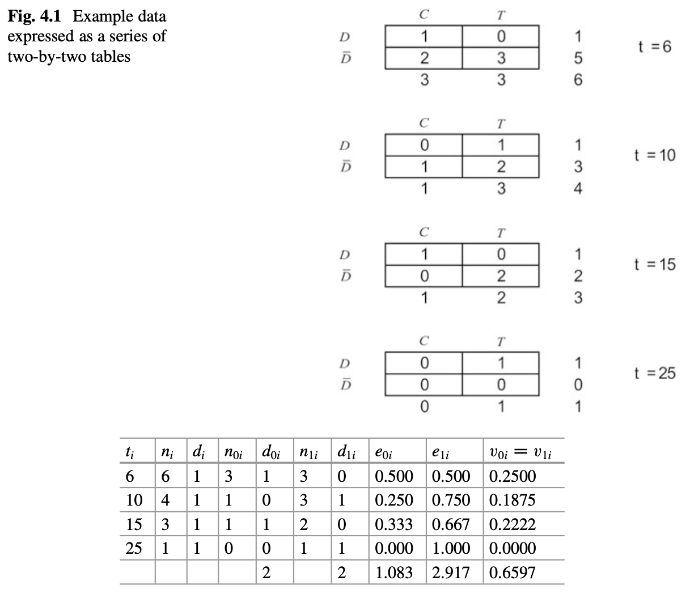

4 Nonparametric Comparision of Survival Distributions
4.1 Comparing Two Groups of Survival Times
- two-side test vs one-sided test
- two-sample Students t-test
- rank-based Mann-Whitney test
For survival analysis, nonparametric tests for
- \(H_0:S_1(t)=S_0(t)\)
- one-side: \(H_A:S_1(t)>S_0(t)\)
- two-side: \(H_A: S_1(t) \neq S_0(t)\)
The relationship between \(S_1(t)\) and \(S_0(t)\) can be different with differnt \(t\)
Lehman alternation: \(H_A: S_1(t)=[S_0(t)]^\psi\), which is equivalent to \(h_1(t)=\psi h_0(t)\). Then the one sided test would be \(H_0:\psi=1\) vs \(H_1: \psi<1\).
Construct a two-by-two table for each failure time \(t_i\), with \(n_{0i}\) and \(n_{1i}\) being the numbers at risk in group 1 and 2, and \(d_{0i}\) and \(d_{1i}\) being the number of failures in group 1 and 2. Based on hypergeometric distribution, we can have
\[p(d_{0i}|n_{0i},n_{1i},d_i)=\frac{\binom{n_{0i}}{d_{0i}}\binom{n_{1i}}{d_{1i}}}{\binom{n_i}{d_i}}\] , where \[\binom{n}{d}=\frac{n!}{d!(n-d)!}\]
The expected mean \(e_{0i}\) and variance \(v_{0i}\) can be given by
\[e_{0i}=E(d_{0i})=\frac{n_{0i}d_i}{n_i}\]
\[v_{0i}=var(d_{0i})=\frac{n_{0i}n_{1i}d_i(n_i-d_i)}{n_i^2(n_i-1)}\]
We can sum the differences between the expected and observed values to get the test statistics \(U_0\) and its variance V_0
\[U_0=\sum_{i=1}^D(d_{0i}-e_{0i})=\sum d_{0i} - \sum e_{0i}\]
\[V_0=var(U_0)=\sum v_{0i}\]
Then the test statistic is
\[\frac{U_0}{\sqrt{V_0}} \sim N(0,1)\] , or
\[\frac{U_0^2}{V_0} \sim \chi^2_1\]
This test is known as the log-rank test.
library(survival)
tt = c(6, 7, 10, 15, 19, 25)
delta = c(1, 0, 1, 1, 0, 1)
trt = c(0, 0, 1, 0, 1, 1) ## group 0 or 1
survdiff(Surv(tt, delta)~trt)## Call:
## survdiff(formula = Surv(tt, delta) ~ trt)
##
## N Observed Expected (O-E)^2/E (O-E)^2/V
## trt=0 3 2 1.08 0.776 1.27
## trt=1 3 2 2.92 0.288 1.27
##
## Chisq= 1.3 on 1 degrees of freedom, p= 0.3A full table is

The log-rank statistic is identical to Cochran-Mantel-Haenzel test in epidemiology, and may also be derived from the proportional hazards model.
A generalization is to define a weighted log-rank test using weights \(w_i\) for D time points,
\[U_0(w)=\sum w_i(d_{0i}-e_{0i})\]
\[var(U_0)=\sum w_i^2v_{0i}=V_0(w)\]
The most common way of setting weights is to sue the product-limit estimator from the combined sample
\[w_i=\{\hat{S}(t_i)\}^\rho\]
A log-rank test using these weights is called the Fleming-Harrington \(G(\rho)\) test. If \(\rho=0\), this test is equivalent to the log-rank test. If \(\rho=1\), the test is called Prentice modification/Peto-Peto modification of the Gehan-Wilcoxon test, which place higher weight on the earlier survival differences.
Back to Example 1.3
library(asaur)
attach(pancreatic)
Progression.d = as.Date(as.character(progression), "%m/%d/%Y")
OnStudy.d = as.Date(as.character(onstudy), "%m/%d/%Y")
Death.d = as.Date(as.character(death), "%m/%d/%Y")
progressionOnly = Progression.d - OnStudy.d
overallSurvival = Death.d - OnStudy.d
pfs = progressionOnly
pfs[is.na(pfs)] = overallSurvival[is.na(pfs)] ### PFS: progression or death, whichever comes first
pfs.month = pfs/30.5
plot(survfit(Surv(pfs.month) ~ stage), xlab="Time in months", ylab="Survival probability",
col=c("blue", "red"), lwd=2)
legend("topright", legend=c("Locally advanced", "Metastatic"), col=c("blue","red") , lwd=2)survdiff(Surv(pfs) ~ stage, rho=0) ### log-rank test## Call:
## survdiff(formula = Surv(pfs) ~ stage, rho = 0)
##
## N Observed Expected (O-E)^2/E (O-E)^2/V
## stage=LA 8 8 12.3 1.49 2.25
## stage=M 33 33 28.7 0.64 2.25
##
## Chisq= 2.2 on 1 degrees of freedom, p= 0.1survdiff(Surv(pfs) ~ stage, rho=1) ### Prentice modification## Call:
## survdiff(formula = Surv(pfs) ~ stage, rho = 1)
##
## N Observed Expected (O-E)^2/E (O-E)^2/V
## stage=LA 8 2.34 5.88 2.128 4.71
## stage=M 33 18.76 15.22 0.822 4.71
##
## Chisq= 4.7 on 1 degrees of freedom, p= 0.034.2 Stratified Tests
If we need to compare two groups while adjusting for another covariate, we can
- include the other covarite (or multiple covarites) as regression terms for the hazard function (following chapters)
- use stratified log-rank test, if the covariate we are adjusting for is categorical with a small number of levels \(G\)
The p value is 0.00299 for Prentice modification test, but 0.134 for log-rank test. From Figure, we can see the metastatic group shows an early survival advantage over the locally advanced group, but the survival curves converge after about 10 months.